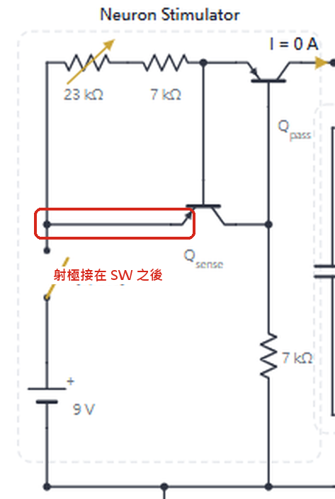
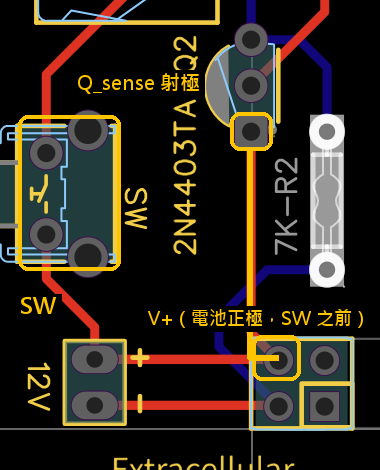
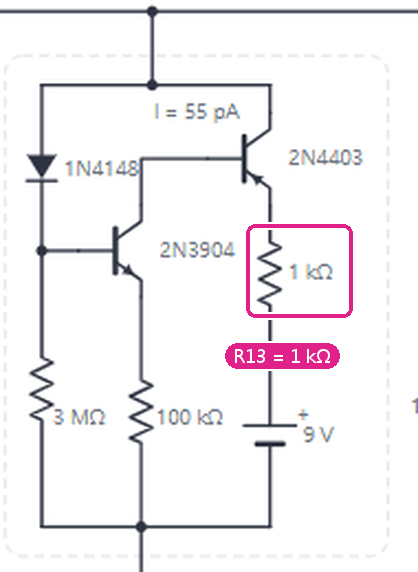
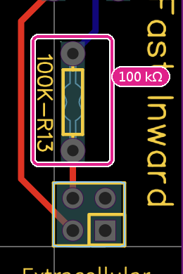
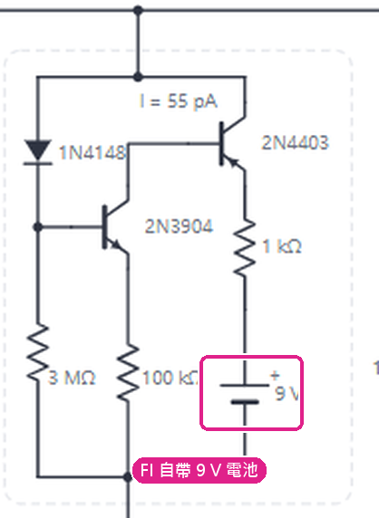
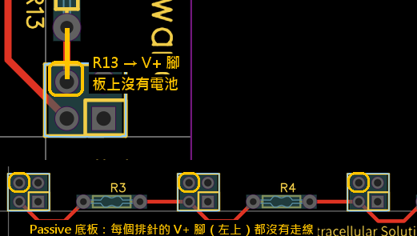

0 電路圖與 PCB 的差別
底圖：講義的 #2-3 電路圖。紅色＝PCB 實際的接法。點紅色標記看這個差別造成什麼問題。
數字對照：照電路圖 vs 照 PCB vs 實測模擬與我們組的量測
| 照電路圖 | 照 PCB | 實測（PCB） | |
|---|---|---|---|
| SW 放開時的 Vm | 0 V，穩定 | 0.53 V，每 129 ms 自發一個 1.46 V 小峰 | 0.6 V，約每 100 ms 一個 1.6 V 小峰 |
| #2-2 按 100 ms 的峰值 | 8.36 V | 2.05 V | 約 2.2 V |
| 同上，拔掉 FI（TTX） | 2.89 V | 1.94 V（和有 FI 幾乎一樣） | 1.84 V（10-13 我們組的板子，記錄 95 µA；有 FI 2.31 V；兩次設定可能不同） |
| #2-3 n = 2，按 300 ms 的峰值 | 8.21 V（拔 FI 1.51 V） | 1.36 V（拔 FI 1.43 V：FI 沒電） | — |
「照電路圖」：Qsense 射極在 SW 之後、R13 = 1 kΩ、FI 自帶 9 V 電池、電池 9 V。「照 PCB」：從講義的 PCB 佈線圖逐焊墊追線得到的接法（netlist）、電池實測 7.8 V。兩邊的 Slow out R2 都用 1 MΩ，可變電阻 0.7 kΩ（約 90 µA）。模擬用 engine.js（和 Python 的 sim.py 同一個模型）；實測是我們組第二、三輪的量測，用的是別組的板子（10-13 的截圖是我們組的板子，電池沒量）。紀錄：MB-014。
怎麼改下一屆的板子
- Qsense 射極改接 SW 之後，只差一條走線。現有的板子：在 Qpass E–B 並 22 kΩ 也能消除漏電。
- R13 改成電路圖的 1 kΩ。
- Passive 底板把 V+ 那一腳串過去，或 FI 板照電路圖放電池座。
1 Qsense 的射極：電路圖接在 SW 之後，PCB 接在 SW 之前（電池正極）


造成的問題
- SW 放開仍輸出 6.3 µA：放開時 Qsense 的 E–B 仍順偏，它的基極電流經 Qpass 流進 Vm。大小 = IC/β，β 100–300 時 9.4–3.1 µA，不是設計值。
- 沒有靜止電位：Vm 被墊到 0.53–0.62 V，正好在 FI 門檻，不按 SW 也自己放電。#2-2 Q5（靜止電位）沒有定義，Q2、Q3 的五參數要靠觸發準位去挑；#2-1 的被動鏈也多了約 0.2 V 基線。
- 關著也耗電 0.95 mA：放開時 Qsense 全開，6.6 V 落在 7 kΩ 上。電池用扣子接在板上、沒有開關，扣著就一直耗電。
實測證據：只接 Stimulator + LK、SW 放開，Vm = 0.7 V（照電路圖應為 0）；第三輪不按 SW 約每 100 ms 一個 1.6 V 小峰。是意外還是刻意：見進階模式摘要區「6 µA 漏電」。
2 R13：電路圖 1 kΩ，PCB 100 kΩ


造成的問題
- 內向電流最多約 70 µA（設計約 6.8 mA），和 Stimulator 的 90 µA 同一個量級，FI 推不出再生性的上升。
- 「AP」和拔掉 FI 一樣高：2.05 vs 1.94 V（照電路圖 8.36 vs 2.89 V）。模擬中 #2-2 Q6 的 TTX 看不出差別，但我們組實測差別比較明顯：有 FI 2.31 V、拔掉 1.84 V（95 µA，峰值低 25 %），原因未確定；Q4（換 50 k–3 M）是在一個本來就沒有 AP 的電路上比較。
實測證據：FI 自鎖時 FI.E4 = 4.0 V。R13 = 1 kΩ 時應在 7.77 V，100 kΩ 才會是 4 V。
3 FI 的電源：電路圖 FI 自帶 9 V 電池；PCB 沒有電池，V+ 走排針，而 Passive 底板沒串 V+


造成的問題
- #2-2（Stimulator 直接疊 FI）：V+ 從排針來，可以動。
- #2-3 n ≥ 1：FI 完全沒有電源，只剩被動反應：n = 2 按 300 ms 是 1.36 V，拔掉 FI 也是 1.43 V（照電路圖 8.21 vs 1.51 V）。學生得自己從 Stimulator 拉一條 V+ 飛線到 FI 才有 AP。
PCB 佈線圖：Passive 底板每個 2×2 排針只有 GND 那一腳（經 100 Ω）有走線，V+ 那一腳（左上）沒有。
1 摘要與注意事項（基礎目標）
照助教給的電路模擬，並和我們組的量測對照。模擬照實體 PCB 建，唯一的差別寫在下面第一張卡。
基礎模型＝助教給的電路#2-3 另有 V+ 飛線的選項
- 完全照 PCB 實際接法（從講義 PCB 圖追線），不是講義的模擬器電路圖。
- Slow out 的 R2 = 1 MΩ（助教指定，大家都已換好；PCB 標 3M，套件原本附的是 100 Ω）。這是唯一和 PCB 標示不同的地方。
- R13 = 100 kΩ（PCB 標示；講義電路圖畫 1 kΩ）。
- Stimulator 的 Qsense 接在 SW 之前：SW 放開時仍漏出約 6 µA。
- V+ = 7.8 V（別組板子的 9 V 電池實測；我們組 10-13 那塊板子的電池沒量）。示波器 ×1 探棒（示波器輸入 1 MΩ，和 100 kΩ 並聯會多約 10 % 的 leak；10-18 更正，之前寫 ×10／10 MΩ。頁面上 10-18 以前算的數字用 10 MΩ，換成 1 MΩ 後主要數字差 ≤ 0.1 V）。可變電阻預設 0.7 kΩ（約 90 µA，第二、三輪的位置）。
- #2-3：Passive PCB 底板沒有串 V+，n ≥ 1 時要從 Stimulator 的 V+ 拉一條飛線到 FI.V+，FI 才有電。#2-3 區域預設「有 V+ 飛線」（另一組實測出 AP 的接法），也可以切回「照實：沒飛線」（FI 沒電）。
我認為可能有問題的地方會影響基礎目標的量測
- #2-2 沒有穩定的靜止：Stimulator 放開時漏 6 µA，把 Vm 墊在 FI 門檻，不按也每 0.1 秒左右冒一個約 1.5 V 小峰（第三輪實測 1.6 V）。按下的第一個峰約 2.1 V（實測 2.2 V），按住被 Slow out 拉在約 0.8 V（實測 0.6–1.0 V、約 40 Hz）。示波器用 Single、觸發準位 1.8 V 以上，才抓得到按下的那一個。
- R13 = 100 kΩ：FI 最多只送約 70 µA，「AP」和拔掉 FI 的被動反應差不多（模擬 2.1 vs 1.9 V），TTX 看不太出差別。實測（10-13，95 µA）差別比模擬大：2.31 vs 1.84 V；換 R13 50 k → 3 M 峰值 2.27 → 1.05 V（從基線算）。原因未確定。
- 基線不是 0：Stimulator 放開時漏 6 µA，只接 Leak 時基線約 0.6–0.7 V。amplitude 一律用「波峰 − 基線」。
- #2-3 要拉 V+ 飛線：沒拉時 FI 沒有 V+，n ≥ 1 只有被動反應。拉了飛線，原版電路就有 AP：峰值約 2.3／2.0／1.8／1.6 V（n = 1–4），過門檻 FI 衝高、SO 拉回，但沒有後過極化（另一組實測就是這樣）。下面「#2-3 有沒有飛線」可以對照。
- #2-3 n = 3、4 可能卡住：有飛線時按住 0.3 秒以上，放開後 Vm 卡在約 0.76 V（FI 和 SO 互相撐住），要斷電重置。用短按，或每次量完斷電。這是預設參數的模擬，實際板子不一定會卡。
- #2-3 Q3 就算有 AP 也量不到門檻：模擬的 Imin 多數低於可變電阻最小的約 44 µA，每按一次都會觸發。但我們組的板子記到比 44 µA 低的電流（#2-2 Q3 15.6 µA、#2-3 Q3 27–36 µA），那塊的電位器阻值沒量，可能大於 10 kΩ；44 µA 只是照絲印 10 kΩ 手算的下限。
- S+FI 那列（已解決）：拔掉 Leak 重量是 4.4／7.2 V，和預測的 4.55／7.13 V 一樣（FI 不按就自己鎖住；按住時頂到 Stimulator 上限）。第二輪的 3.0／5.9 V 是 Leak 還插著。
- #2-2 Q5 的反轉電位：照實量的話，靜止＝基線；內向電流能把 Vm 推到的最高點（S+FI 鎖住約 4.5 V，理論上限是 V+）；外向電流能把 Vm 拉到的最低點（Slow out 的極限約 0.6 V；按住時被拉在約 0.78 V）。
#2-3 有沒有飛線看波形判斷 FI 有沒有電
原版電路、可變電阻 0.7 kΩ、SW 按住 1 秒。有沒有拉 V+ 飛線，波形不一樣。
| V+ 飛線 | 按住時 Vm（n = 1–4） | 放開後 | 看起來像 |
|---|---|---|---|
| 有 | 衝到 2.26／1.97／1.78／1.64 V，再被拉回約 0.8 V | n = 1、2 回到靜止；n = 3、4 卡在 0.76 V | AP：門檻、FI 衝高、SO 拉回（另一組） |
| 沒有 | 只到 1.68／1.36／1.12／0.92 V，慢慢降到約 0.75 V | 回到靜止 | 被動反應＋SO 往下拉，沒有尖峰 |
靜止都是 0.29／0.18／0.12／0.09 V：Passive unit 的 100 kΩ 吸掉 Stimulator 的 6 µA 漏電，所以 #2-3 不像 #2-2（n = 0）會自己冒小峰。來源：hw2-debug/sim/check_23.py combos。
#2-3 長按 SW：spike 後的小下降、兩種結果同一個電路為何有時拉高基線、有時連續發放
spike 後先小降再上升（有飛線、n = 4、可變電阻 0.7 kΩ ≈ 90 µA）：spike 到 1.64 V 時 SO.S 已充到約 0.7 V，Slow out 的 4403 一下子拉出約 220 µA，把 Vm 拉到 0.65 V，低於 FI 的門檻，FI 的電流從 67 µA 掉到 17 µA。這時被動鏈的電容還有電（PC4 約 1.0–1.3 V），經 10 kΩ 送進 35–57 µA，SO.S 也慢慢放電（τ = 100 ms），Vm 爬回去；過了約 0.69 V，FI 又打開，衝出 0.91 V 的小凸起，最後停在 0.80 V：
所以長按時的「基線」不是被動的平台，而是 FI 和 SO 互相抵住的平衡點；那一下下降再上升，是繞著這個平衡點的阻尼振盪（0.65 → 0.91 → 0.77 → 0.80 V，約 50 ms 一圈）。
兩種結果：振盪會衰減（一個 spike，之後拉高基線）還是越來越大（連續發放），看刺激電流落在哪。模擬（理想電流源，Stimulator 的 6 µA 漏電另計，按住 1.5 秒）：
| n | 沒有 spike | 連續發放 | 一個 spike＋拉高基線 |
|---|---|---|---|
| 1 | < 7 µA | 7–19 µA | ≥ 22 µA |
| 2 | < 13 µA | 13–19 µA | ≥ 22 µA |
| 3 | < 22 µA | 22–31 µA | ≥ 34 µA |
| 4 | < 34 µA | 34–52 µA | ≥ 55 µA |
Stimulator 的範圍是約 44–99 µA（可變電阻 10–0 kΩ），只有 n = 4 的連續發放帶落在裡面：可變電阻 ≥ 5.5 kΩ（≤ 58 µA）就連續發放，5.5 kΩ 約 14 Hz、10 kΩ 約 10 Hz，第一個 1.36–1.48 V，之後每個約 1.0–1.1 V、谷底約 0.6 V。在 #2-3 區域選 n = 4、把可變電阻拉到 6 kΩ 以上再長按就看得到。
為什麼你們第二次、其他組都變成連續發放（照可能性排）：
- 可變電阻的位置變了：量 Q3（找 Imin）時會把可變電阻轉到小電流那邊，沒轉回 0.7 kΩ，n = 4 長按就變連續發放。先把可變電阻轉回去，或用 S + 1 個 Passive unit 重量電流（平台 ÷ 100 kΩ；超過約 65 µA 平台會被削平、讀不準），高於約 60 µA 就應該回到「拉高基線」。
- FI 的 2N4403 β 不一樣：模擬用 β = 150。只把 FI 那顆改成 120，n = 4 在 0.7 kΩ 就連續發放，n = 3 在 4 kΩ 以上也會；改成 100，n = 4 連 0 kΩ（最大電流）都連續發放。2N4403 的 β 規格是 100–300，而且隨溫度變，每組的板子不同，所以別組在一般設定下就連續發放並不奇怪。只改 SO 或 Stimulator 那顆的 β，結果不變。
- n 不一樣：n ≤ 3 的連續發放帶在 Stimulator 的電流範圍以下，原版 β 時只會看到一個 spike＋拉高基線。
排除的：電池電壓（V+ 7.8 → 6.2 V 結果不變，Stimulator 的電流只看 VEB／(pot + 7 kΩ)）；上一次按壓留下的電荷（n = 4、0.7 kΩ 長按放開後卡在 0.76 V，再長按仍是拉高基線；連續發放的設定下第一、第二次長按都一樣）；SO 的 C1、Passive unit 的 1 µF ±20 %、二極體參數（都不會讓 n = 1–4 變成連續發放）。生理上兩種都有：電流適中時重複發放（rate coding），電流太大時 depolarization block；這個電路剛好在兩者的交界附近。
第二輪麵包板：你量的 vs 當時的模型紀錄：R2 還是 100 Ω 的時候
| 組合 | 實測 靜止／按住 | 當時模型（R2 = 100 Ω） |
|---|---|---|
| S | 7.1／7.3 | 7.14／7.14 |
| S + LK | 0.7／7.2 | 0.62／7.13 |
| S + FI（重量，拔掉 Leak） | 4.4／7.2 | 4.55／7.13 |
| S + SO | 1.0／7.2 | 0.97／7.13 |
| S + LK + FI | 3.1／5.9 | 3.04／5.83 |
| S + LK + SO | 0.5／4.8 | 0.46／4.72 |
| 全接，FI 鎖住 | 2.4／4.5 | 2.39／4.49 |
V；可變電阻 0.7 kΩ。第二輪 S+FI 量到 3.0／5.9 V（Leak 還插著），重量後吻合。沒有 SO 的列可以在 #2-2 區域勾掉板子重現；有 SO 的三列是 R2 = 100 Ω 時量的，現在模擬都用 1 MΩ，不會一樣。
量測注意事項五參數、電流、示波器
- 五參數：stimulation current、peak amplitude（波峰 − 基線）、half-width（50 % 高度的寬度）、rise τ（刺激開始到 63 % 振幅）、decay τ（波峰到剩 37 %）。講義的 “decade” 理解成 decay。模擬區右側會自動算。
- 量電流（沒有三用電表）：只接 Stimulator + 1 個 Passive unit，按住 SW 超過 0.5 秒，平台電壓 ÷ 100 kΩ。量好就不要再轉可變電阻。只在平台低於約 6.5 V（電流 ≲ 65 µA）時準：Stimulator 的輸出上限約 7.1 V，電流更大時平台被削平，算出來（或電表讀到）的是削平後的電流，偏低。我們組 10-13 只接 1 個 unit：平台 6.97 V、電表 0.07 mA，上升 τ 75 ms、到 95 % 150 ms；用削頂反推設定電流約 83 µA，同一個模型預測到 95 % 是 157 ms。
- 示波器：#2-1 0.2–0.5 V/div、100–200 ms/div；#2-2 1 V/div、10–50 ms/div；#2-3 CH2 細胞外 10–50 mV/div。上升緣觸發、Single。
- 每按一次至少隔 1 秒，讓電容放電。
節點與接點速查回報量測時用
- 格式「板.節點」：ST Stimulator、LK Leak、FI Fast inward、SO Slow out。單寫 Vm = Stimulator 輸出（CH1）。
- FI.V+ = R13 下端（應為 7.8 V）；FI.E4 = R13 上端；SO.S = SO 的 C1 上腳；SO.B3 = SO 的 D1「−」端。
- 電壓都對 GND（Stimulator 電源「−」）量；兩點相減用 MATH CH1 − CH2。
- 完整表：節點命名（舊頁）。
1 摘要：真正的 AP（進階目標）
Stimulator 改用麵包板重插（不漏電、可以精準控制按多久），其他板子照舊用 PCB，再夾 4 顆可拆的電阻做出符合文獻定義的 AP。所有數字都是模擬（和即時模擬同一個引擎，紀錄 MB-025），還沒實測。
麵包板 Stimulator：用哪一顆、怎麼精準控制按多久建議 555 單擊；零件百年電子光復店（清大）都有貨
只有 Stimulator 改插麵包板，LK、FI、SO、Passive unit 照舊用 PCB。電流源照講義電路圖接：Qsense 的射極在開關之後，放開時不漏電。輸出串一顆 1N4148：開關放開時 Qpass 的基極在 0 V，少了這顆，Vm 一超過約 0.6 V 就會從 Qpass 的集極–基極被吸走（靜止電位抬不上去，按完才發的 AP 也被削掉）。用一顆新的 9 V 電池，三條杜邦線接到 PCB 疊接排針。
| 開關 | 按多久由誰決定 | 精準度 | 多的零件 | 適合 |
|---|---|---|---|---|
| A 手按 | 手 | 約 50–300 ms，每次差幾十 ms | 無 | 只要觸發一次 |
| B 555 單擊（建議） | 按一下送出 1.1·R·C 長的脈衝，按多久都一樣；1 MΩ 微調 → 11 ms–1.1 s（C 換 0.1 µF：1.1–110 ms） | 每次重複差 < 1 %；確切長度在示波器 CH2 讀 | ICM7555＋1 MΩ 微調＋3 電阻＋3 電容 | #2-1 五種長度、#2-2 Q2–Q3、#2-3 |
| C Arduino Nano | 程式設定，可以連發兩下量不反應期 | µs 級 | Nano（副廠 NT$248）＋2N3904＋2N4403＋3 電阻；要寫程式、接 USB | 想自動化 |
| D 示波器的訊號產生器 | MSO5074 若有 GEN 選配：Pulse 0 → 5 V | µs 級 | 同 C 的兩顆電晶體開關 | 實驗室有就用 |
模擬區按「按 xx ms」或「自訂」就等於 555 送出一次那麼長的脈衝。
B：555 單擊版（按鈕只負責觸發；按住不放也只送一個脈衝）
脈衝長度對照、換成固定長度
t = 1.1 × (10 kΩ + 微調) × C。C = 1 µF 時：微調 0 → 11 ms、90 kΩ → 110 ms、900 kΩ → 1.0 s。想要固定幾段長度，把微調換成固定電阻（1 %）：10 ms → 9.1 kΩ、20 ms → 18 kΩ、50 ms → 47 kΩ（52 ms）、100 ms → 91 kΩ、500 ms → 470 kΩ（517 ms）、1 s → 910 kΩ（不要再串 10 kΩ）。薄膜電容 ±5 %，所以每段都在示波器上量一次記下來。
ICM7555 是 CMOS 版，輸出高電位就是 9 V；買不到可用 NE555P，輸出高電位約 7.3 V，電流源照樣工作（輸出上限低約 1.7 V，不影響 AP）。
A：手按版插法
C：Arduino 版怎麼接
Nano 的 D9 → 10 kΩ → 2N3904 基極；3904 射極接 GND、集極 → 10 kΩ → 2N4403 基極；4403 射極接 +9V、集極接 ST.P（取代開關）；4403 基極再接 100 kΩ 到 +9V。按鈕接 D2 和 GND。Nano 用 USB 供電，GND 和麵包板 GND 接在一起。序列埠輸入毫秒數就改長度：
接到 PCB 疊接排針、先量什麼
- 把 PCB 的 Stimulator 從疊接拿掉：它的 Qsense 接在 SW 之前，留著會一直漏 6 µA 進 Vm。
- 三條杜邦線（公對母）：Vm → 疊接最上面那塊板的 Intracellular 排針（2 腳，任一腳）；V+ → 2×2 排針中和方形焊墊對角的那一腳；GND → 和方形焊墊同一排的那一腳。
- #2-3：FI 的 V+ 另拉一條到麵包板的 +9V 軌（Passive 底板沒串 V+）。
- 只接 LK、開關放開：Vm 應該是 0 V（原版 PCB 是 0.6–0.7 V）。555 版：CH2 夾 555 輸出（腳 3），平時 0 V，按一下看到一個方波，長度就是刺激時間。
庫存與價格：2026-10-17 從百年電子網站讀到的庫存量與光復店貨架位置（光復店＝新竹市光復路二段 170 號，清大旁）。網站的庫存量可能是全部門市合計，去之前可打 03-5729570 確認。紀錄 MB-024。
AP 的定義（文獻）換成這個電路的判準
Barnett & Larkman（2007）把 AP 描述成膜電位短暫反轉、分三個主要階段：去極化、再極化、慢慢恢復的後過極化；Na⁺ 通道的招募是再生性的，所以一過門檻就是完整的 AP（all-or-nothing），去極化會越過 0 mV 但停在 ENa 之前；Na⁺ 通道失活造成絕對不反應期，K⁺ 通道關得慢造成後過極化與相對不反應期。Purves 等人的教科書（第 2–3 章）也用門檻、自我增強的 Na⁺ 通透度上升、較慢的 K⁺ 通透度上升來描述 AP；這個電路的 FI／Slow out 就對應 Hodgkin & Huxley（1952）模型裡的 Na⁺／K⁺ 電流。
| 判準 | 文獻 | 這個電路怎麼驗 |
|---|---|---|
| C1 門檻 | 過門檻才有 AP，之下只有局部反應 | 按壓長度由短到長：未觸發時和拔掉 FI 一樣；超過某長度就觸發 |
| C2 all-or-none、再生性 | 一過門檻就是完整 AP，大小不隨刺激變 | 不同按壓長度、電流的峰值幾乎相同；上升 dV/dt 遠大於被動充電 |
| C3 峰值 | 越過 0 mV、停在 ENa 之前 | 峰值遠高於門檻、低於 V+（內向電流的反轉電位）。「越過 0 mV」在這裡沒有意義：Vm 對 GND 量，靜止本來就是正的 |
| C4 再極化 | K⁺ 外向電流拉回 | Slow out 拉回，比被動放電快 |
| C5 後過極化 | 低於靜止電位、慢慢恢復 | AP 後 Vm 低於靜止再回來 |
| C6 不反應期 | 剛發完 AP 不能（或較難）再發 | AP 後不同間隔再按一次 |
來源：M. W. Barnett, P. M. Larkman, “The action potential,” Practical Neurology 7:192–197 (2007)；D. Purves et al., Neuroscience 2nd ed., ch. 2–3（NCBI Bookshelf）；A. L. Hodgkin, A. F. Huxley, J Physiol 117:500 (1952)。
真正的 AP 完整電路圖紫紅色＝和原版電路不同
真正的 AP 電路（麵包板 ST＋只加、可拆）每顆的用途
| 加什麼 | 夾在哪 | 為什麼 |
|---|---|---|
| 麵包板 ST | 取代 PCB 的 Stimulator | 不漏電（靜止點不隨 n 改變）、輸出二極體讓靜止能抬到 1.19 V、可精準控制按多久 |
| 11 kΩ | R13 兩端 | FI 能送約 0.6 mA：快速、再生性的上升（C2） |
| 680 kΩ | R13 下端 → FI.E3 | FI 門檻抬到約 1.85 V，高於靜止 |
| 390 kΩ | V+ → Vm | 靜止抬到 1.19 V，高於 Slow out 能拉到的約 0.6 V（才有 C5） |
| 56 kΩ | SO 的 C1 兩腳 | SO.S = 0.36 Vm：靜止時 Slow out 關著，AP 時打開 |
| 680 kΩ × n | V+ → 每個 Passive unit（#2-3） | 每段膜的靜止都是 1.19 V，被動鏈不會把 active 端拉低 |
| V+ 線 | 麵包板 +9V → FI.V+（#2-3） | Passive PCB 底板沒串 V+ |
#2-3 量 Q3 的 Imin：麵包板 ST 用 100 kΩ 可變電阻，電流約 13.5–100 µA，涵蓋 n = 0–4 的 Imin（12.8–69.4 µA；n = 0 剛好在下限）。
試過 47 kΩ：n = 4、長按後，8 組隨機參數中有 3 組 FI 和 Slow out 互相抵住，鎖在約 2.9 V；改 56 kΩ 後全部正常。
驗證：每個應該有 AP 的情境C1–C6
| 情境 | 靜止 | C1 門檻 | C2 峰值（拔 FI）／dV/dt | C5 後過極化 | C6 |
|---|---|---|---|---|---|
| #2-2 Q2 | 1.19 | 按 8 ms | 5.65–6.02（3.18）／706 vs 91 V/s | 0.58 V，低於靜止 0.61 V、134 ms | AP 後 60 ms 內不能再發，70 ms 起可以 |
| #2-3 n = 1 | 1.18 | 按 20 ms | 4.91–5.12（2.63）／709 vs 37 | 0.70 V | AP 後 30 ms 再按：第二個 4.60 V |
| #2-3 n = 2 | 1.18 | 按 40 ms | 4.82–4.89（2.29）／788 vs 20 | 0.70 V | 同上（4.56 V） |
| #2-3 n = 3 | 1.18 | 按 60 ms | 4.63–4.75（2.08）／850 vs 12 | 0.69 V | 同上（4.58 V） |
| #2-3 n = 4 | 1.18 | 按 120 ms | 4.59–4.60（1.92）／877 vs 7 | 0.71 V | 同上（4.50 V） |
#2-3 用最大電流（約 100 µA）。C3：峰值 4.6–6.0 V，遠高於門檻、低於 V+ 9 V。C4：#2-2 半高寬約 10 ms，Slow out 拉回。不反應期是 active membrane 的性質，#2-3 用的是同一塊，以 #2-2 的量測為準。
| 其他題目 | 結果 |
|---|---|
| #2-2 Q3 五種電流（101／62／46／32／21 µA） | 峰值 6.06／5.84／5.72／5.56／5.35 V，到峰 18→57 ms：大小幾乎不變（all-or-none） |
| #2-2 Q4 R13（有效值）10k → 3M | 峰值 6.00 → 3.09 V、dV/dt 704 → 91 V/s（= 被動）：FI 越弱 AP 越小越慢，300k 以上已不是 AP |
| #2-2 Q6 TTX（拔 FI） | 只剩被動反應（3.18 V），沒有 AP |
| #2-2 Q6 TEA（拔 SO） | 沒有再極化：拔掉後 56 kΩ 也跟著拔掉，靜止升到門檻以上，FI 自己鎖在 7.6 V |
| #2-3 Q3 Imin（n = 0–4） | 12.8／22.1／33.2／48.4／69.4 µA |
| #2-3 Q4 delay（75 µA，略高於 n = 4 的 Imin） | 20／40／66／111／334 ms |
| #2-3 Q5 CH2（n = 2，FI 拉 V+ 線） | CH1 4.86 V；CH2 單相 +146 mV，比 CH1 波峰晚 4 ms（主要是 FI 的電流經細胞外 100 Ω） |
| 隨機參數（8 組 × n = 0 與 4） | 全部安靜、會觸發、後過極化 0.56–0.75 V、長按 1.5 秒放開後回到靜止 |
為什麼 #2-3 不能用方案 3被動鏈就是 leak
方案 3（470k V+→Vm、470k→FI.E3、47k 並 C1、11k 並 R13）只把 active 端的靜止抬高。接上 Passive unit 後：
- 被動鏈對 active 端是一顆接 GND 的電阻：n = 1–4 時約 110／62／48／43 kΩ（每個 unit 100 kΩ 到 GND，中間隔 10 kΩ）。Passive unit 的靜止是 0 V，等於多了一條反轉電位 0 V 的 leak。
- Stimulator 的漏電改從 unit 1 進去，大部分流進 unit 1 的 100 kΩ，不再幫 active 端偏壓。
- 結果 active 端靜止掉到 0.79／0.61／0.52／0.46 V（n = 1–4），n ≥ 2 已經碰到 Slow out 能拉到的約 0.6 V，後過極化消失（和「再加 leak」那節同一件事：加 47 kΩ 就沒了）。
- 門檻還在約 2 V，和靜止的距離變大、轉移電阻變小，Imin 變成 40／68／102／147 µA，n = 3、4 超過 Stimulator 的最大電流。
改法就是讓每段膜都有同樣的靜止電位（神經裡每段膜的 Eleak 相同，樹突不會把胞體拉低）：每個 Passive unit 加 680 kΩ 接 V+，Stimulator 換成不漏電的麵包板版消掉漏電，讓靜止不隨 n 改變。
助教電路的問題原版（R2 = 1 MΩ）為什麼沒有真正的 AP
- R13 = 100 kΩ（電路圖 1 kΩ）：FI 最多約 70 µA，上升和被動充電差不多：C2 不明顯。
- Qsense 接在 SW 前：放開時漏 6.3 µA，靜止 0.53 V 剛好在 FI 門檻附近，不按也自己冒小峰：沒有穩定的靜止，C1 不成立。
- Eleak（0 V）低於 Slow out 的極限（約 0.6 V）：後過極化不可能（C5）。
- FI 門檻和 Slow out 鉗位都在約 0.6 V：餘裕太小。
- #2-3：Passive PCB 底板沒有串 V+，要拉飛線 FI 才有電。拉了之後原版就有 AP（1.6–2.3 V），但靜止 0.1–0.3 V 低於 Slow out 的極限，一樣沒有後過極化；n = 3、4 長按後 FI 和 SO 互鎖在 0.76 V。可變電阻最小約 44 µA，量不到 Imin（5–32 µA）。
6 µA 漏電（靜止 0.6 V）：意外還是刻意？判斷：意外（PCB 走線錯），把握高但不是確定
去年的 FI、SO 和今年一樣，今年重新設計的是 Stimulator：Qpass + Qsense 組成定電流源，I ≈ VEB(Qsense)／(pot + 7 kΩ)，電流不隨 Vm 改變。漏電來自 Qsense 的射極接在 SW 之前（V+），不是 SW 之後（ST.P）。
| Qsense 射極 | SW 放開：輸出 | SW 放開：耗電 | SW 按下：輸出（pot 0.7 kΩ） |
|---|---|---|---|
| SW 之後（講義電路圖） | 0 | 0 | 約 90 µA |
| SW 之前（PCB 實際） | 6.3 µA → Vm 0.62 V | 0.95 mA | 約 90 µA（一樣） |
認為是意外的理由：
- 設計者自己的電路圖沒有漏電：講義上 Qsense 的射極畫在 SW 之後，這也是兩顆電晶體限流電路的標準接法。PCB 把它接到旁邊的 V+，只差 SW 的一腳。
- SW 放開時一直耗 0.95 mA：Qsense 在放開時全開，電流經 7 kΩ 到地。電池扣著、沒有開關，只要沒拔電池 Stimulator 就一直在耗電（9 V 電池約 500 mAh，三週左右就用完）。你們量到 7.8 V 而不是 9 V 也符合這點（只是符合，不是證明）。沒有人會設計一個「關掉」時還耗 1 mA 的電流源。
- 漏電大小由 β 決定，不是設計值：漏電 = IC(Qsense)／β。β 100／150／200／300 時是 9.4／6.3／4.7／3.1 µA，靜止 0.93／0.62／0.47／0.31 V；電池從 9 V 掉到 7 V，漏電也從 7.4 掉到 5.5 µA。刻意的偏壓會用一顆固定電阻（像真正的 AP 用的 V+ → Vm 330 kΩ），不會靠一個差三倍的 β。
- 它讓作業量不了：#2-2 不按也自己冒小峰，Q5 的「靜止電位」沒有定義，五參數要用觸發準位去挑；#2-1 的被動鏈也多了約 0.2 V 的基線。重新設計 Stimulator 的目的是乾淨的電流源，「放開 = 0」是電流源最基本的性質。
- PCB 和電路圖還有別的不一致：R13 100 kΩ（圖 1 kΩ）、FI 沒有自己的電池、R2 的位置附的是 100 Ω（圖 3 MΩ）、Passive PCB 底板沒串 V+。表示板子沒有逐一對照電路圖檢查過，一處接錯並不意外。
刻意的可能：有人可能想讓 Vm 靜止時有一點去極化、離門檻近一點，讓弱的 FI（R13 100 kΩ）比較容易觸發。但 0.62 V 剛好落在 FI 門檻（約 0.6 V）和 Slow out 的極限（約 0.6 V）上，結果是自發放電、沒有穩定靜止，和這個目的相反；三個約 0.6 V 撞在一起比較像巧合。
怎麼查（不用三用電表）：SW 放開時用示波器量 ST.R（Qsense 集極、7 kΩ 上端）。約 6.6 V 就表示 Qsense 正在耗 6.6／7k ≈ 0.95 mA；照講義接法應該是 0 V。也可以問助教去年的 Stimulator 和今年的 PCB 檔，看 Qsense 射極原本接哪。
加上真正的 AP 電路後要量的確認夾對
| 量 | 條件 | 預期 |
|---|---|---|
| Vm | SW 放開 | 1.19 V，平的 |
| FI.E3 | SW 放開 | 約 1.15 V |
| SO.S | SW 放開 | 約 0.42 V |
| ST.R（Qpass 基極） | SW 放開 | 0 V |
| Vm 峰值／AP 後最低 | 按一下（10 ms 以上） | 5.7–6.0 V／0.58 V |
| #2-3 各 PC 節點 | SW 放開 | 都約 1.15–1.18 V |
手算重點（PCB 原版）Stimulator 漏電、FI 自鎖、Slow out 極限
模擬方法和 Python 版相同
- 修正節點分析、backward Euler（Δt = 0.2 ms）、阻尼 Newton、Ebers–Moll 電晶體與二極體模型；DC 不收斂時 gmin stepping。
- 10-12 起每個節點加 10 pF 雜散電容（配線；×1 探棒約 100 pF 只接在量測點，和 1 µF 比可忽略）：拔掉 Leak 時 Vm 節點沒有電容，FI 自鎖在數值上沒有唯一解（S+FI 會卡住）。時間常數約 1 µs，波形幾乎不變（重跑所有檢查，差 ≤ 0.07 V；R2 = 1 MΩ 時「按下的第一個峰」看落在小峰的哪個階段，1.75–2.06 V）。另外 Newton 在 20 次迭代後、各節點 KCL 誤差 < 10 pA 也算收斂。
- 參數：2N3904 IS 6.7 fA、β 200；2N4403 IS 10 fA、β 150；1N4148 IS 2.52 nA、n 1.752。
- 網頁引擎 engine.js、電路圖 schematic.js；Python 在 hw2-debug/sim/（
check_ap.py、check_23.py等）。
#2-1 Passive
Stimulator → 5 個 Passive unit（1 µF ∥ 100 kΩ，隔 10 kΩ）。CH1 = 第 1 個，CH2 = 最後一個（或中間）。
題目與量法
- Q1 照片標元件（5 個 unit 的 C1、R1，上排 10 kΩ、下排 100 Ω）。
- Q2 一次刺激的五參數；比較第一、中間、最後一個。
- Q3 五種刺激時間（左上按鈕），第一 vs 最後：amplitude、delay of peak、rise τ、decay τ 四張圖。電流寫一次。
- Q4–Q5 原因：電流沿路從 100 kΩ 漏掉、後面的電容要隔著 10 kΩ 充電（低通）；生理意義：被動的 dendrite／axon（cable）。
進階：怎麼解讀
- 每個 unit τ = 100 kΩ × 1 µF = 100 ms；第一個看到的等效電阻約 30 kΩ（電流流到後面），所以長刺激 rise τ 約 63 ms。
- λ ≈ √(100k/10k) ≈ 3 個 unit（離散近似）。
- Stimulator 漏電 6 µA 讓第一個 unit 的基線約 0.2 V。並 22 kΩ 可以消掉。
#2-2 Active
助教給的電路：R2 = 1 MΩ、R13 = 100 kΩ。CH1 = Vm。
Stimulator 是麵包板版（可變電阻 0–100 kΩ），「原版電路」情境才是 PCB 版。點電路圖上的紅色接點可以斷開排針。
題目與量法
- Q2 按一下（例如 100 ms）記錄一個「AP」的五參數（模擬約 2.1 V、按下後約 11 ms 到峰）。不按也會自己冒小峰：Single、觸發準位 1.8 V 以上。
- Q3 五種可變電阻位置，每個量一次（電流用 S + 1 個 Passive unit 換算；平台要低於約 6.5 V，見摘要「量測注意事項」）。
- Q4 R13 換 50k–3M，電流固定。
- Q5 基線、FI 能推到的最高點（拔 SO、FI 鎖住）、SO 能拉到的最低點。
- Q6 拔 FI（TTX）、拔 SO（TEA）各量一次。拔 FI：不再自己冒峰，按下到 1.9 V（和有 FI 的 2.1 V 差不多）；拔 SO：FI 不按就鎖在 3.0 V，按住升到 5.8 V。我們組實測（95 µA）：拔 FI 1.84 V（有 FI 2.31 V）；拔 SO 靜止 2.68 V、按下最高 4.60 V（按壓長度沒記錄）。
- 版本「多疊一個 LK」：LK 上再疊一塊 LK（只加板子、可拆）。靜止降到 0.30 V、不再自己冒峰，每按一次（10 ms 以上）只有一個 AP，Q2、Q3 比較好量。
進階：兩個情境
- 原版電路（R2 = 1 MΩ）：不按約每 130 ms 一個 1.46 V 小峰；按下的第一個峰 1.8–2.1 V（實測 2.2 V）；按住停 0.78 V。
- 真正的 AP：靜止 1.19 V、按 7.5 ms 以上觸發、AP 5.2–5.4 V（拔 FI 2.0 V）、AP 後 0.58 V 持續約 125 ms、AP 後 20 ms 內不能再發；按住時連續發放。Q4 換 R13 有效值、Q6 拔 FI／SO 都可以在這裡試。
#2-3 Passive → active
底板沒串 V+，n ≥ 1 時 FI 要拉飛線才有電。預設「有 V+ 飛線」；「照實：沒飛線」只剩被動反應。CH1 = active 端 Vm。
可以補 V+ 線、換電流源、套用修正。
題目與量法
- Q2 n = 4，按一下 SW，記錄第一個 AP 的五參數（有飛線：峰值約 1.6 V；沒飛線只有被動反應）。
- Q3 每個 n 從小電流往上加，找剛好出現 AP 的電流。模擬的 Imin 是 4.7／11.7／20.5／32 µA（n = 1–4），低於可變電阻最小的約 44 µA（照絲印 10 kΩ 手算），所以會「最小電流也觸發」；照記錄。我們組的板子記到 27.26／32.32／36.16／33.15 µA：n = 4 和模擬吻合，n = 1–3 偏高（原因未知，可能是那時轉不到更低）。
- Q4 電流固定，n = 4…0 各按 1 秒，讀「到峰」。n = 3、4 放開後若卡在約 0.76 V，斷電重置再量下一個。
- 長按：n = 4 時 spike 後先降到約 0.65 V、再停在 0.80 V（FI 和 SO 抵住）；可變電阻 ≥ 5.5 kΩ 或 FI 的 4403 β 偏低時會變成連續發放。見摘要區的說明。
- Q5 n = 2，CH2 = AX（下方紅箭頭），10–50 mV/div。
進階：三個情境
- 原版電路：沒拉飛線，FI 沒有 V+，n ≥ 1 只有被動反應。
- 原版＋V+ 飛線：有 AP，峰值 2.26／1.97／1.78／1.64 V（n = 1–4），沒飛線（FI 沒電）只有 1.68／1.36／1.12／0.92 V；有門檻、SO 拉回，沒有後過極化。n = 3、4 長按後互鎖在 0.76 V。
- 真正的 AP：每個 unit 也接 560 kΩ 到 V+，所以 n = 0–4 靜止都是 1.19 V。Imin = 7.6／13.4／20.9／31.0／44.8 µA；量 Imin 時把「Q_pass E–B 並」改成 12 kΩ（可變電阻約 51–2.6 µA）。Delay（47 µA）= 24／46／79／136／370 ms。後過極化 0.4–0.5 V。
- 為什麼不能直接用方案 3：見摘要區。